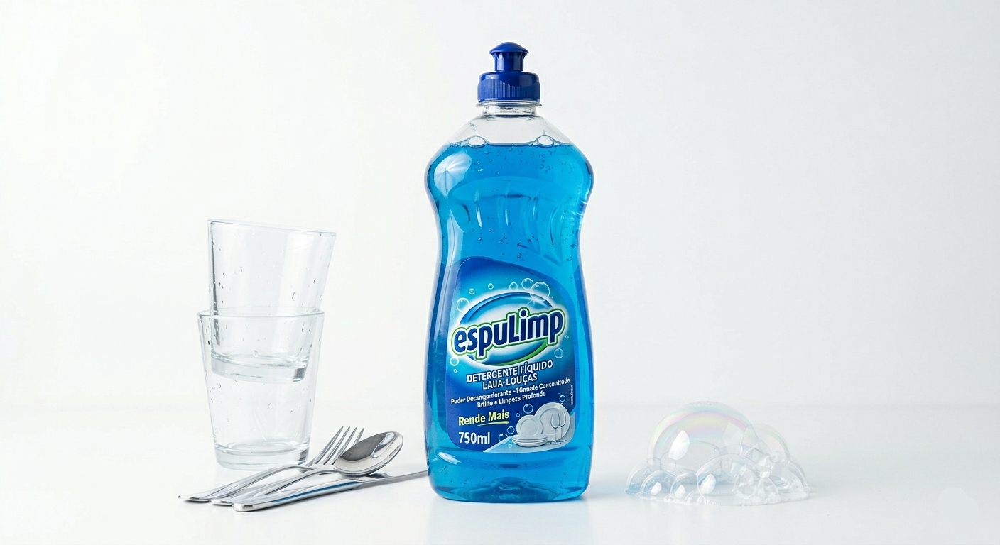
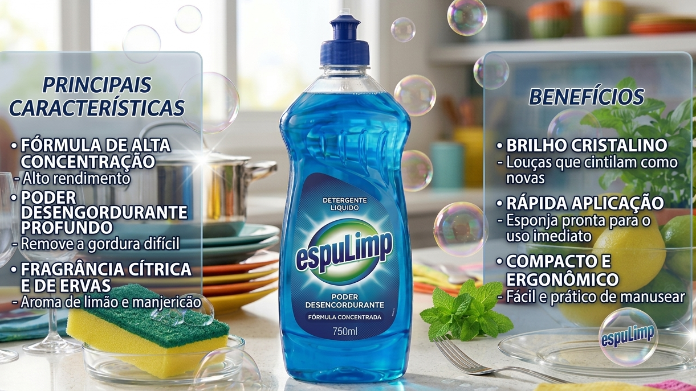
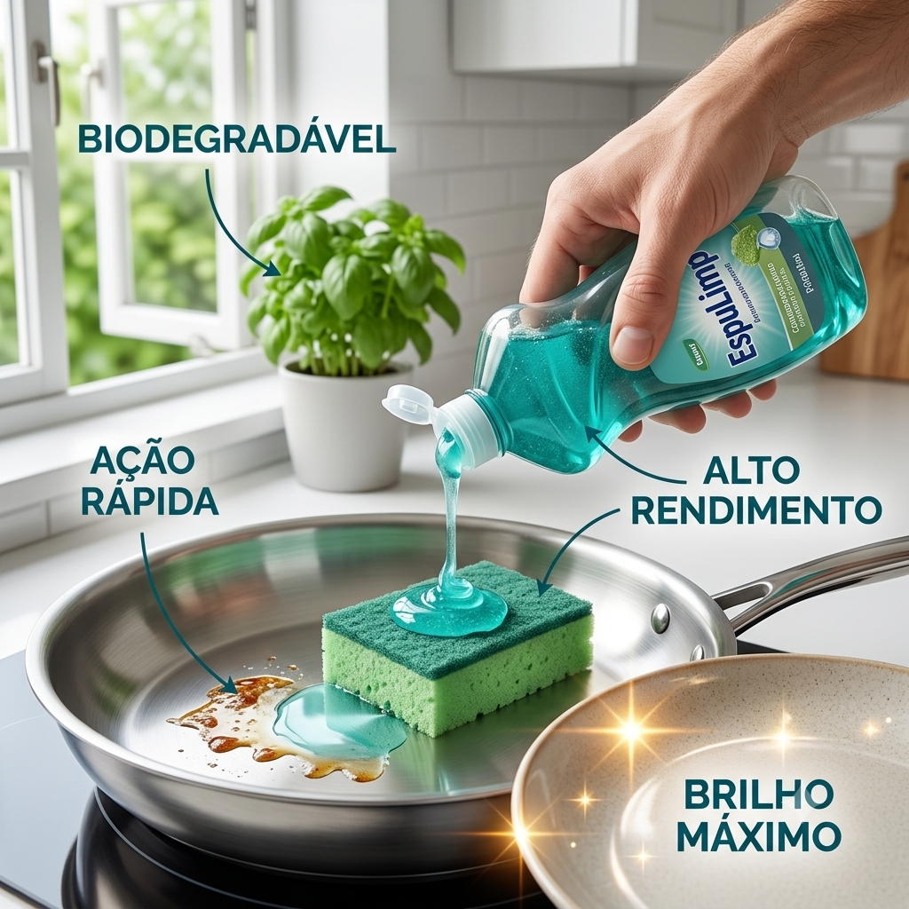
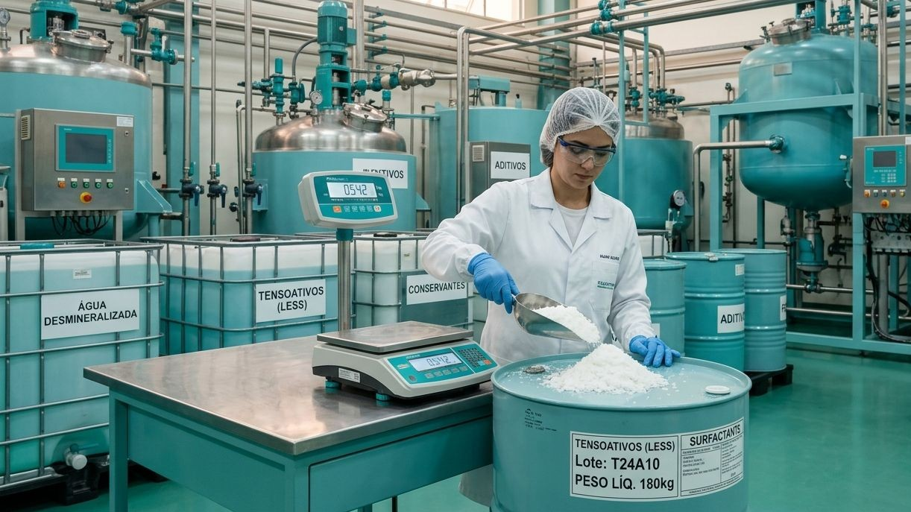
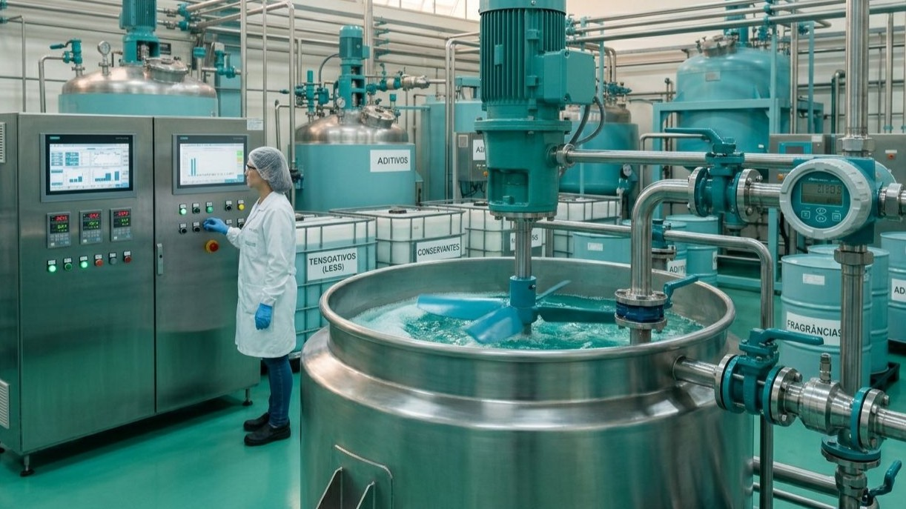
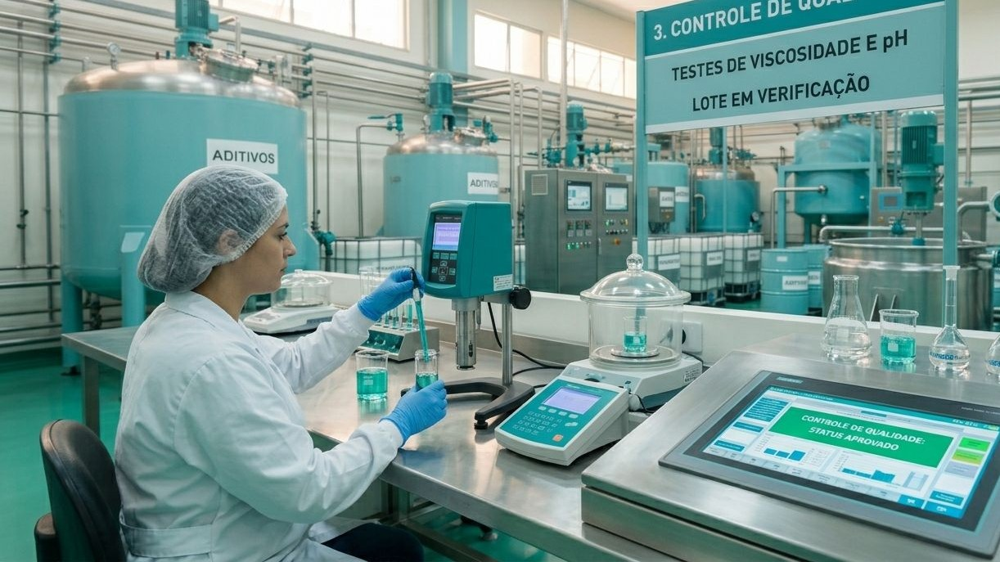

Conheça nossa linha de produtos, testes de laboratório e o nosso processo industrial sustentável.

Apresentação Oficial do Produto

Principais Características e Benefícios

Ação Desengordurante Profunda em Inox

Etapa 1: Controle Rigoroso de Matéria-Prima

Etapa 2: Processo de Mistura e Homogeneização

Etapa 3: Testes Finais de Viscosidade e pH